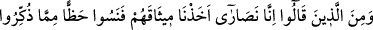
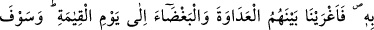
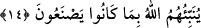

Peygamber dedi ki: Biliyorum, fakat ben yıkayacağım.
Bunu bizzat yıkamamda bir hikmet var.
O kâfirin bir armağan heykeli vardı.
Onu kaybolmuş görünce kararı kalmadı.
Dedi ki gece kaldığım odadadır,
Haberim olmadan orada bıraktım.
Utanıyordu ama hırsı da onu o yana çekiyordu.
Hırs ejderhadır, küçük bir şey değil.
Heykelin peşine düşüp koşa koşa geldi.
Onu Mustafa’nın odasında gördü.
Hakk’ın eli, bizzat o pisliği yıkamaktaydı.
Kötü gözler ondan ırak olsun.
Gördü de heykeli hatırından çıktı.
Onda bir coşkunluktur baş gösterdi, yakasını yırttı.
İki elini yüzüne, başına vuruyor,
Kafasını duvara, kapıya çarpıyordu.
Burnundan, başından kanlar akmaya başladı.
O ulu Peygamber ona acıdı.
Artık çok fazla titreyip çırpınınca,
Mustafa onu kucakladı.
Yatıştırdı, çok iltifat etti.
Gözlerini açtı, ona kendini tanıttı.
Îmana geldi de Mustafa ona dedi ki:
Bu gece de bizim konuğumuz ol.
Adam: Vallahi, dedi, ebedî olarak senin konuğunum.
Nerde olsam nereye gitsem, sana misafirim.
Ey Allah’ın elçisi! Bulutsuz bir güneş gibi
Peygamberliği sen tamamladın, apaydın bir hale koydun.
14- «Biz hristiyanlarız» diyenlerden de kesin sözlerini almıştık, ama onlar da
uyarıldıkları şeyden (verilen öğütlerin veya Kitâb’ın) önemli bir bölümünü
unuttular. Bu sebeple kıyâmet gününe kadar aralarına düşmanlık ve kin saldık.
Yakında Allah onlara yaptıklarını haber verecektir.